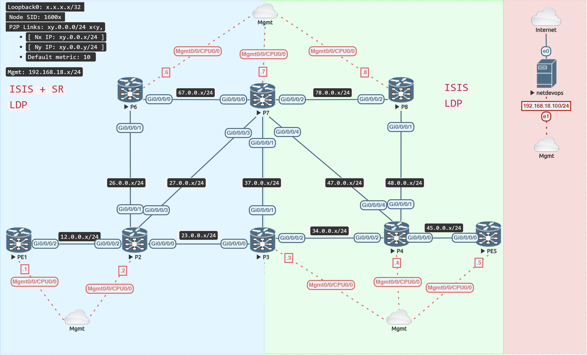

Introducing Segment Routing (SR)

Configuration
Configure SR on the routers on the topology's left side.
- Each node will be assigned a unique prefix-sid x, where x is the node number, and this will be specified on its loopback interface.
- PE1: 1, P2: 2, etc.
- When the Prefix-SID index is appended to the SRGB lowest offset value 16000, the result is a Prefix-SID label.
- Enable SR exclusively on the control plane; routers will continue to use LDP labels to direct traffic in the data plane.
Verify
In Cisco XR, the default SRGB (Segment Routing Global Block) is 16000 - 23999, which means 8000 labels are allocated for Prefix SID (Segment ID). The router assigns Adjacency-SID from the label switch database's dynamic range, starting at 24000.
For each adjacency, Cisco XR creates two Adj-SIDs, one protected and one not.
RP/0/RP0/CPU0:PE1#show mpls label table detail
Wed Feb 1 06:01:51.053 UTC
Table Label Owner State Rewrite
----- ------- ------------------------------- ------ -------
0 0 LSD(A) InUse Yes
0 1 LSD(A) InUse Yes
0 2 LSD(A) InUse Yes
0 13 LSD(A) InUse Yes
0 16000 ISIS(A):IGP InUse No
(Lbl-blk SRGB, vers:0, (start_label=16000, size=8000)
0 24000 LDP(A) InUse Yes
(IPv4, vers:0, 'default':4U, 2.2.2.2/32)
0 24001 LDP(A) InUse Yes
(IPv4, vers:0, 'default':4U, 3.3.3.3/32)
0 24002 LDP(A) InUse Yes
(IPv4, vers:0, 'default':4U, 6.6.6.6/32)
0 24003 LDP(A) InUse Yes
(IPv4, vers:0, 'default':4U, 7.7.7.7/32)
0 24004 LDP(A) InUse Yes
(IPv4, vers:0, 'default':4U, 4.4.4.4/32)
0 24005 LDP(A) InUse Yes
(IPv4, vers:0, 'default':4U, 8.8.8.8/32)
0 24006 LDP(A) InUse Yes
(IPv4, vers:0, 'default':4U, 5.5.5.5/32)
0 24007 LDP(A) InUse Yes
(IPv4, vers:0, 'default':4U, 23.0.0.0/24)
0 24008 LDP(A) InUse Yes
(IPv4, vers:0, 'default':4U, 26.0.0.0/24)
0 24009 LDP(A) InUse Yes
(IPv4, vers:0, 'default':4U, 67.0.0.0/24)
0 24010 LDP(A) InUse Yes
(IPv4, vers:0, 'default':4U, 37.0.0.0/24)
0 24011 LDP(A) InUse Yes
(IPv4, vers:0, 'default':4U, 27.0.0.0/24)
0 24012 LDP(A) InUse Yes
(IPv4, vers:0, 'default':4U, 47.0.0.0/24)
0 24013 LDP(A) InUse Yes
(IPv4, vers:0, 'default':4U, 34.0.0.0/24)
0 24014 LDP(A) InUse Yes
(IPv4, vers:0, 'default':4U, 78.0.0.0/24)
0 24015 LDP(A) InUse Yes
(IPv4, vers:0, 'default':4U, 48.0.0.0/24)
0 24016 LDP(A) InUse Yes
(IPv4, vers:0, 'default':4U, 45.0.0.0/24)
0 24017 ISIS(A):IGP InUse Yes
(SR Adj Segment IPv4, vers:0, index=1, type=0, intf=Gi0/0/0/2, nh=12.0.0.2)
0 24018 ISIS(A):IGP InUse Yes
(SR Adj Segment IPv4, vers:0, index=3, type=0, intf=Gi0/0/0/2, nh=12.0.0.2)
RP/0/RP0/CPU0:PE1#
RP/0/RP0/CPU0:PE1#show isis adjacency detail
Wed Feb 1 06:01:53.577 UTC
IS-IS IGP Level-2 adjacencies:
System Id Interface SNPA State Hold Changed NSF IPv4 IPv6
BFD BFD
P2 Gi0/0/0/2 *PtoP* Up 22 03:03:32 Yes None None
Area Address: 49
Neighbor IPv4 Address: 12.0.0.2*
Adjacency SID: 24017
Non-FRR Adjacency SID: 24018
Topology: IPv4 Unicast
BFD Status: BFD Not Required, Neighbor Useable
Total adjacency count: 1
RP/0/RP0/CPU0:PE1#
ISIS has been extended to propagate Segment Routing information to all routers in the topology, such as SRGB (Segment Routing Global Block), Prefix-SID, and Adj-SID.
RP/0/RP0/CPU0:PE1#show isis database verbose PE1
Wed Feb 1 06:03:12.922 UTC
IS-IS IGP (Level-2) Link State Database
LSPID LSP Seq Num LSP Checksum LSP Holdtime/Rcvd ATT/P/OL
PE1.00-00 * 0x00000016 0x76da 978 /* 0/0/0
Area Address: 49
NLPID: 0xcc
IP Address: 1.1.1.1
Metric: 10 IP-Extended 12.0.0.0/24
Prefix Attribute Flags: X:0 R:0 N:0 E:0 A:0
Metric: 0 IP-Extended 1.1.1.1/32
Prefix-SID Index: 1, Algorithm:0, R:0 N:1 P:0 E:0 V:0 L:0
Prefix Attribute Flags: X:0 R:0 N:1 E:0 A:0
Hostname: PE1
Router Cap: 1.1.1.1 D:0 S:0
Segment Routing: I:1 V:0, SRGB Base: 16000 Range: 8000
Node Maximum SID Depth:
Label Imposition: 10
SR Algorithm:
Algorithm: 0
Algorithm: 1
Metric: 10 IS-Extended P2.00
Local Interface ID: 9, Remote Interface ID: 9
Interface IP Address: 12.0.0.1
Neighbor IP Address: 12.0.0.2
Physical BW: 1000000 kbits/sec
ADJ-SID: F:0 B:0 V:1 L:1 S:0 P:0 weight:0 Adjacency-sid:24018
Total Level-2 LSP count: 1 Local Level-2 LSP count: 1
RP/0/RP0/CPU0:PE1#
RP/0/RP0/CPU0:PE1#show isis segment-routing label table
Wed Feb 1 06:04:30.395 UTC
IS-IS IGP IS Label Table
Label Prefix Interface
---------- ---------------- ---------
16001 1.1.1.1/32 Loopback0
16002 2.2.2.2/32
16003 3.3.3.3/32
16006 6.6.6.6/32
16007 7.7.7.7/32
RP/0/RP0/CPU0:PE1#
RP/0/RP0/CPU0:PE1#show route 7.7.7.7/32 detail
Wed Feb 1 06:05:31.910 UTC
Routing entry for 7.7.7.7/32
Known via "isis IGP", distance 115, metric 20, labeled SR, type level-2 // (1)
Installed Feb 1 06:00:31.849 for 00:05:00
Routing Descriptor Blocks
12.0.0.2, from 7.7.7.7, via GigabitEthernet0/0/0/2
Route metric is 20
Label: 0x3e87 (16007) // (2)
Tunnel ID: None
Binding Label: None
Extended communities count: 0
Path id:1 Path ref count:0
NHID:0x1(Ref:18)
Route version is 0x8 (8)
Local Label: 0x3e87 (16007)
IP Precedence: Not Set
QoS Group ID: Not Set
Flow-tag: Not Set
Fwd-class: Not Set
Route Priority: RIB_PRIORITY_NON_RECURSIVE_MEDIUM (7) SVD Type RIB_SVD_TYPE_LOCAL
Download Priority 1, Download Version 109
No advertising protos.
RP/0/RP0/CPU0:PE1#
- This is now a
labeled SRroute - Segment Routing Prefix-SID label, also called Node-SID
Despite the fact that both prefix-sid and adjacency-sid labels are propagated in ISIS, routers only install the prefix-sid labels of all routers in the topology and just the locally generated adjacency-sid labels.
RP/0/RP0/CPU0:P2#show mpls forwarding
Wed Feb 1 06:06:02.160 UTC
Local Outgoing Prefix Outgoing Next Hop Bytes
Label Label or ID Interface Switched
------ ----------- ------------------ ------------ --------------- ------------
16001 Pop SR Pfx (idx 1) Gi0/0/0/2 12.0.0.1 0
16003 Pop SR Pfx (idx 3) Gi0/0/0/0 23.0.0.3 0
16006 Pop SR Pfx (idx 6) Gi0/0/0/1 26.0.0.6 0
16007 Pop SR Pfx (idx 7) Gi0/0/0/3 27.0.0.7 0
24000 Pop 3.3.3.3/32 Gi0/0/0/0 23.0.0.3 646
24001 24000 4.4.4.4/32 Gi0/0/0/0 23.0.0.3 0
24004 4.4.4.4/32 Gi0/0/0/3 27.0.0.7 0
24002 Pop 7.7.7.7/32 Gi0/0/0/3 27.0.0.7 588
24003 24002 5.5.5.5/32 Gi0/0/0/0 23.0.0.3 1152
24005 5.5.5.5/32 Gi0/0/0/3 27.0.0.7 1872
24004 Pop 6.6.6.6/32 Gi0/0/0/1 26.0.0.6 686
24005 24000 8.8.8.8/32 Gi0/0/0/3 27.0.0.7 0
24006 Pop 34.0.0.0/24 Gi0/0/0/0 23.0.0.3 0
24007 Pop 47.0.0.0/24 Gi0/0/0/3 27.0.0.7 0
24008 Pop 37.0.0.0/24 Gi0/0/0/0 23.0.0.3 776
Pop 37.0.0.0/24 Gi0/0/0/3 27.0.0.7 0
24009 24007 45.0.0.0/24 Gi0/0/0/0 23.0.0.3 0
24007 45.0.0.0/24 Gi0/0/0/3 27.0.0.7 0
24010 Pop 67.0.0.0/24 Gi0/0/0/3 27.0.0.7 776
Pop 67.0.0.0/24 Gi0/0/0/1 26.0.0.6 776
24011 Pop 78.0.0.0/24 Gi0/0/0/3 27.0.0.7 0
24012 24011 48.0.0.0/24 Gi0/0/0/0 23.0.0.3 0
24001 48.0.0.0/24 Gi0/0/0/3 27.0.0.7 0
24013 Pop 1.1.1.1/32 Gi0/0/0/2 12.0.0.1 686
24014 Pop SR Adj (idx 1) Gi0/0/0/2 12.0.0.1 0
24015 Pop SR Adj (idx 3) Gi0/0/0/2 12.0.0.1 0
24016 Pop SR Adj (idx 1) Gi0/0/0/0 23.0.0.3 0
24017 Pop SR Adj (idx 3) Gi0/0/0/0 23.0.0.3 0
24018 Pop SR Adj (idx 1) Gi0/0/0/1 26.0.0.6 0
24019 Pop SR Adj (idx 3) Gi0/0/0/1 26.0.0.6 0
24020 Pop SR Adj (idx 1) Gi0/0/0/3 27.0.0.7 0
24021 Pop SR Adj (idx 3) Gi0/0/0/3 27.0.0.7 0
RP/0/RP0/CPU0:P2#
RP/0/RP0/CPU0:PE1#show cef 7.7.7.7/32
Wed Feb 1 06:07:19.682 UTC
7.7.7.7/32, version 79, labeled SR, internal 0x1000001 0x8130 (ptr 0xe7af800) [1], 0x600 (0xdacf5c0), 0xa28 (0xeae69b8)
Updated Feb 1 06:00:31.856
remote adjacency to GigabitEthernet0/0/0/2
Prefix Len 32, traffic index 0, precedence n/a, priority 3
Extensions: context-label:16007
gateway array (0xd937230) reference count 9, flags 0x68, source lsd (5), 1 backups
[4 type 5 flags 0x8401 (0xeb29708) ext 0x0 (0x0)]
LW-LDI[type=5, refc=3, ptr=0xdacf5c0, sh-ldi=0xeb29708]
gateway array update type-time 1 Feb 1 06:00:05.844
LDI Update time Feb 1 06:00:05.844
LW-LDI-TS Feb 1 06:00:31.858
via 12.0.0.2/32, GigabitEthernet0/0/0/2, 14 dependencies, weight 0, class 0 [flags 0x0]
path-idx 0 NHID 0x0 [0xf399790 0x0]
next hop 12.0.0.2/32
remote adjacency
local label 24003 labels imposed {24002} // (1)
Load distribution: 0 (refcount 4)
Hash OK Interface Address
0 Y GigabitEthernet0/0/0/2 remote
RP/0/RP0/CPU0:PE1#
- LDP Labels
MPLS Data Plane
Although a labelled SR route is available, the mpls data plane continues to use LDP by default.
RP/0/RP0/CPU0:PE1#traceroute mpls ipv4 7.7.7.7/32
Wed Feb 1 06:07:59.433 UTC
Tracing MPLS Label Switched Path to 7.7.7.7/32, timeout is 2 seconds
Codes: '!' - success, 'Q' - request not sent, '.' - timeout,
'L' - labeled output interface, 'B' - unlabeled output interface,
'D' - DS Map mismatch, 'F' - no FEC mapping, 'f' - FEC mismatch,
'M' - malformed request, 'm' - unsupported tlvs, 'N' - no rx label,
'P' - no rx intf label prot, 'p' - premature termination of LSP,
'R' - transit router, 'I' - unknown upstream index,
'X' - unknown return code, 'x' - return code 0
Type escape sequence to abort.
0 12.0.0.1 MRU 1500 [Labels: 24002 Exp: 0]
L 1 12.0.0.2 MRU 1500 [Labels: implicit-null Exp: 0] 23 ms
! 2 27.0.0.7 18 ms
RP/0/RP0/CPU0:PE1#
SR-MPLS Data Plane
There is also an SR-MPLS data plane that may be tested, as seen below.
RP/0/RP0/CPU0:PE1#traceroute sr-mpls 7.7.7.7/32
Wed Feb 1 06:08:16.413 UTC
Tracing MPLS Label Switched Path to 7.7.7.7/32, timeout is 2 seconds
Codes: '!' - success, 'Q' - request not sent, '.' - timeout,
'L' - labeled output interface, 'B' - unlabeled output interface,
'D' - DS Map mismatch, 'F' - no FEC mapping, 'f' - FEC mismatch,
'M' - malformed request, 'm' - unsupported tlvs, 'N' - no rx label,
'P' - no rx intf label prot, 'p' - premature termination of LSP,
'R' - transit router, 'I' - unknown upstream index,
'X' - unknown return code, 'x' - return code 0
Type escape sequence to abort.
0 12.0.0.1 MRU 1500 [Labels: 16007 Exp: 0]
L 1 12.0.0.2 MRU 1500 [Labels: implicit-null Exp: 0] 11 ms
! 2 27.0.0.7 18 ms
RP/0/RP0/CPU0:PE1#
SR Data Plane
When segment routing is enabled in ISIS, the sr-prefer keyword is required for the CEF table to prefer SR-MPLS labels over LDP labels.
Verify
The SR enabled nodes may be accessible using both SR and LDP, however SR is now the default protocol in the mpls data plane.
RP/0/RP0/CPU0:PE1#traceroute mpls ipv4 7.7.7.7/32
Wed Feb 1 06:10:42.008 UTC
Tracing MPLS Label Switched Path to 7.7.7.7/32, timeout is 2 seconds
Codes: '!' - success, 'Q' - request not sent, '.' - timeout,
'L' - labeled output interface, 'B' - unlabeled output interface,
'D' - DS Map mismatch, 'F' - no FEC mapping, 'f' - FEC mismatch,
'M' - malformed request, 'm' - unsupported tlvs, 'N' - no rx label,
'P' - no rx intf label prot, 'p' - premature termination of LSP,
'R' - transit router, 'I' - unknown upstream index,
'X' - unknown return code, 'x' - return code 0
Type escape sequence to abort.
0 12.0.0.1 MRU 1500 [Labels: 16007 Exp: 0]
L 1 12.0.0.2 MRU 1500 [Labels: implicit-null Exp: 0] 19 ms
! 2 27.0.0.7 11 ms
RP/0/RP0/CPU0:PE1#
In the mpls data plane, the other routers that can only be accessible via LDP are doing the same.
RP/0/RP0/CPU0:PE1#traceroute mpls ipv4 5.5.5.5/32
Wed Feb 1 06:10:58.359 UTC
Tracing MPLS Label Switched Path to 5.5.5.5/32, timeout is 2 seconds
Codes: '!' - success, 'Q' - request not sent, '.' - timeout,
'L' - labeled output interface, 'B' - unlabeled output interface,
'D' - DS Map mismatch, 'F' - no FEC mapping, 'f' - FEC mismatch,
'M' - malformed request, 'm' - unsupported tlvs, 'N' - no rx label,
'P' - no rx intf label prot, 'p' - premature termination of LSP,
'R' - transit router, 'I' - unknown upstream index,
'X' - unknown return code, 'x' - return code 0
Type escape sequence to abort.
0 12.0.0.1 MRU 1500 [Labels: 24003 Exp: 0]
L 1 12.0.0.2 MRU 1500 [Labels: 24005 Exp: 0] 11 ms
L 2 27.0.0.7 MRU 1500 [Labels: 24000 Exp: 0] 10 ms
L 3 47.0.0.4 MRU 1500 [Labels: implicit-null Exp: 0] 13 ms
! 4 45.0.0.5 15 ms
RP/0/RP0/CPU0:PE1#